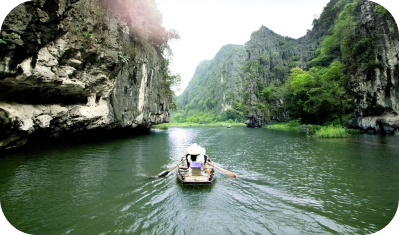

SUDESTE ASSIÁTICO
Guia De Fretamento De Iates De Luxo Para O Sudeste
O Sudeste Asiático é uma maravilha para explorar de super-iate. Praias sonhadoras sem fim, cenários exuberantes e arquipélagos ricos repletos de comunidades raras, recifes e spots de surf secretos tornam todos os dias uma nova aventura gloriosa. Estas são praias de estrelas de cinema, onde as festas palpitam sob as luas cheias da Tailândia, coelhinhos de ioga aperfeiçoam sua pose de lótus nos arrozais de Bali, e as stupas de Mianmar brilham como ouro na luz da manhã. Tecendo seu caminho em um iate fretado pelo Sudeste Asiático, você testemunhará locais inesquecíveis, chamadas melódicas à oração e algumas das culturas mais encantadoras que você poderia imaginar.
Onde No Mundo
Este trecho exótico do mundo preso entre a Índia, a China e a Austrália oferece alguns dos destinos de viagem preferidos pelo mundo. Embora anteriormente conhecida como trilha de mochileiros, as margens do Sudeste Asiático estão aumentando o ritmo quando se trata de estilo cinco estrelas, brilho e glamour. Cingapura está abrindo caminho para um futuro novo e brilhante, a Malásia é um melting pot de cultura e a Indonésia possui muitas experiências sob medida. Mesmo os mais experientes globetrotters encontrarão a melhor comida de rua nessas esquinas e paisagens que poderiam lançar mil navios - espere selvas revestidas de orangotango, ilhas desertas, cidades bombeadoras e templos em todos os lugares.
Portos De Escala Favorecidos
Cingapura está cheia de sass e estilo, tornando-se um dos destinos preferidos para fretadores de iates no Sudeste Asiático. A cidade movimentada oferece um oásis encantador de verde para baixo pelos Jardins on the Bay, juntamente com amarrações de estilo cinco estrelas em Marina Bay, e a chance de nadar em águas sensuais na Ilha Sentosa. As Filipinas abrigam o altamente belo Boracay e algumas das pessoas mais amigáveis do mundo. Mesmo que Boracay mal seja um pouco no oceano azul, as areias brancas de sílica, a amplitude de barcos a vela e os esconderijos de lua de mel o tornam um paraíso irrestrito. Bali é um paraíso para surfistas e amantes de ioga, tornando-se um porto de escala preferido para hóspedes charter de iates que buscam alinhamento espiritual nas margens do Sudeste Asiático. Surfe, faça compras e passe algumas noites em um lindo resort no final chique de Seminyak, ou siga para o interior para passear pelos arrozais verdejantes e o paraíso alimentar orgânico que é Ubud